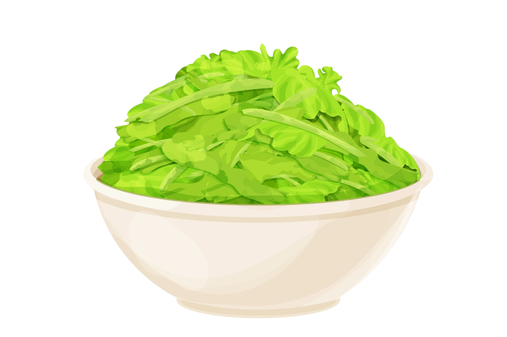
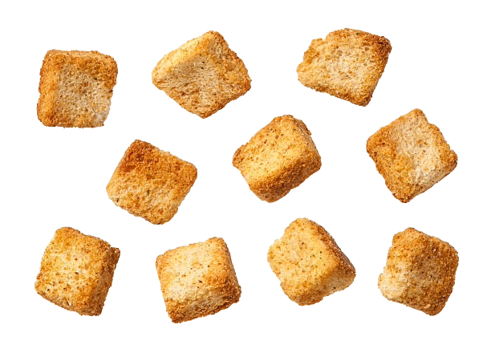
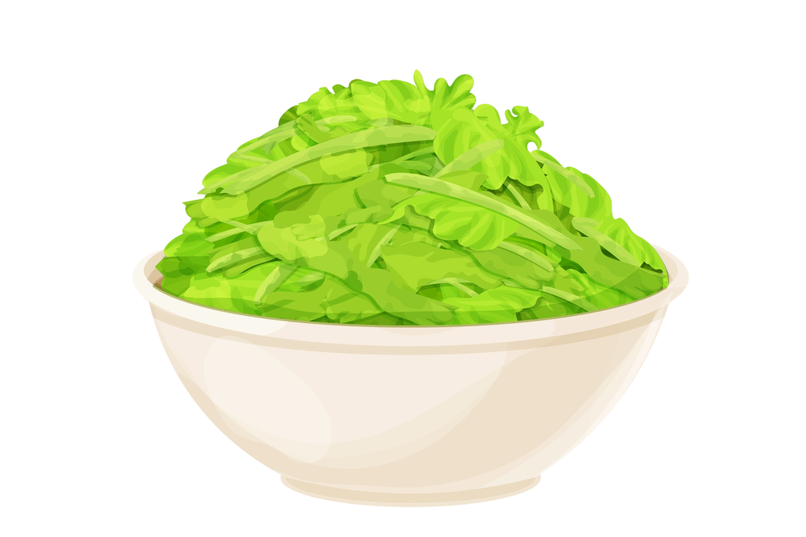
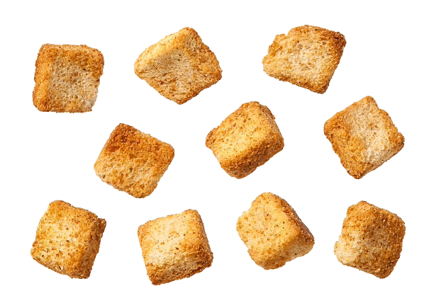

Caesar Salad
Instructions
Croutons
- Preheat the oven to 375°F.
- Cut the baguette in half, lengthwise. Then cut into 1/4 inch thick pieces. You only need 4 cups of sliced bread. You can save the rest for another time.
- Use a large bowl to mix the bread, garlic powder, and salt. While stirring the bread, drizzle the olive oil over it. Mix until the bread has been fully coated in all the ingredients and has absorbed all of the olive oil.
- Spread the bread into an even layer on a sheet pan. Bake for 10 minutes or until golden brown, and enjoy!
Dressing
- Add all ingredients to a small bowl.
- Mix ingredients together well into a dressing consistency. You can either use right away, however, it is ideal to store the dressing in the refrigerator for 20 minutes. This allows the flavors to blend better.
- When done be sure to store the dressing in a tightly sealed container in the refrigerator.
Salad
- Cut up the romaine lettuce to your liking.
- Add lettuce to a bowl with croutons and salad dressing.
- Mix items in the bowl and lastly top it off with parmesan cheese if desired.
 



Try hovering over (and following) the knife and croutons!!

Ingredients
Lettuce
- 2 small heads of romaine lettuce
Croutons
- 7 oz baguette
- 5 tbsp extra virgin olive oil
- 1/4 tsp sea salt
- 1/4 tsp garlic powder
Dressing
- 1 large garlic clove, chopped
- 1/4 tsp sea salt
- 1 tbsp anchovy paste
- 3/4 cup mayonnaise
- 1/2 cup parmesan cheese
- 3 tbsp lemon juice
- 1 tsp pepper
- 3/4 dijon mustard
Extra
- 2 cups freshly grated parmesan cheese